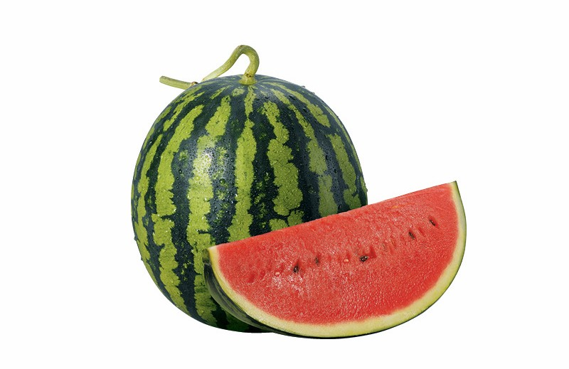

My passion for building started at a young age when I was gifted my first Lego set. I'd spend hours in my bedroom putting blocks together to build robots and whatever else I could think of. Programming, similarly is about taking fundamental concepts and adding those blocks together. Everything starts with the basics, which is why I enjoy experimenting with as many things as possible and expanding my breadth of knowledge.
I have quite a lot of experience in using the internet and using various websites. From a young age, I would spend a lot of my time on things like newgrounds playing flash games. As I've grown older I've moved on to using it as a resource for improving myself. Through sites like youtube, it's possible to learn almost anything you want from just a quick search.
| Title | Year | Director | Genre | Favourite Character |
|---|---|---|---|---|
| Fight Club | 1999 | David Fincher | Drama | Tyler Durden |
| Spirited Away | 2001 | Hayao Miyazaki | Fantasy | Chihiro Ogino |
| The Dark Knight | 2008 | Christopher Nolan | Action | Batman |
| Parasite | 2019 | Bong Joon Ho | Drama | Ki Taek |
| V for Vendetta | 2005 | James McTeigue | Drama | V |
A picture Representing Me
